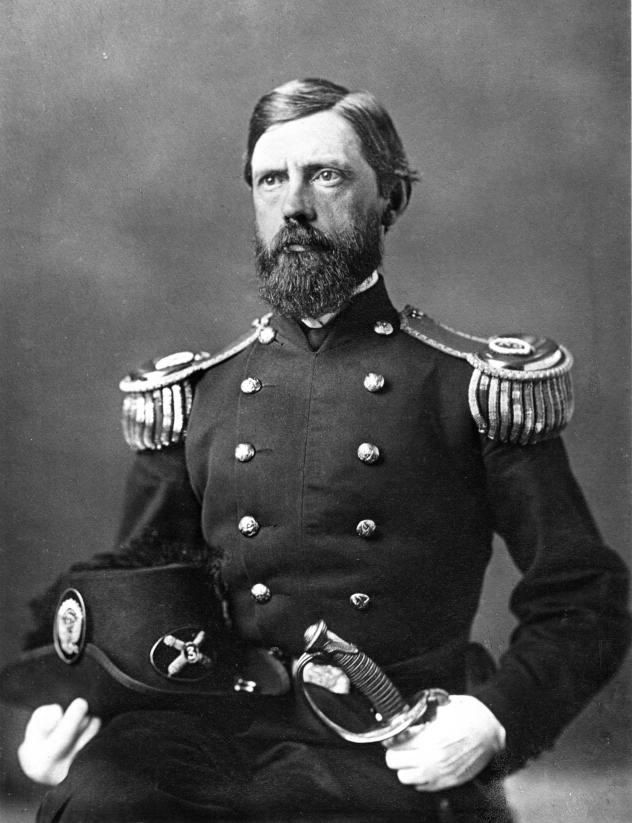
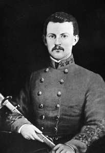

|
At 5:30 on the morning of July 1, 1863, a detail of troopers
from the 8th Illinois Cavalry noted ominous signs of
movement in the fog-shrouded valley of Marsh Creek, some
three miles west of Gettysburg. Soldiers in uniforms of
gray were materializing in the mist, ghostly shapes marching
down the Chambersburg Pike from the direction of Cashtown.
Hastily dispatching a courier to alert his commanding
officer, Lieutenant Marcellus Jones took a carbine from one
of his sergeants and fired a shot at the enemy column. The
Battle of Gettysburg had begun.
The advancing Rebels belonged to Major
General Henry Heth's division of A. P. Hill's First Corps.
Following Hill's instructions, Herb was marching to occupy
the crossroads at Gettysburg, confident that his 7,500 men
|

Maj. Gen. John Reynolds was the most prominent Union casualty
on the first day of the Battle of Gettysburg.
|
would easily brush aside the handful of local militia he
believed to be guarding the town. But when Herb arrived on
the high ground known as Herr Ridge, he saw formations of
Federal cavalrymen deploying atop McPherson's Ridge, half a
mile to his front, and blocking his advance.
The polished movements of the horsemen as they dismounted
and fanned out to fight on foot--every man in his proper
place and horses led quickly to the rear--marked these
Yankees as veterans.
The Confederates were not going to get into Gettysburg
without a fight. Heth ordered forward the brigades of
Brigadier Generals James J. Archer and Joseph R. Davis. From
the high ground, General John Buford's Federal cavalrymen
opened fire with their breech-loading carbines. Buford had
been forced to stretch his line precariously thin, but he
was determined to cover the approaches to Gettysburg and buy
time in order to allow Major General John F. Reynolds,
commanding the Army of the Potomac's left wing, to hasten up
the infantry.
Reynolds arrived on the field at
9:00 a.m., and soon troops of the First Corps were marching
at a double-quick into line atop McPherson's Ridge,
relieving Buford's hard-pressed troopers. Reynolds rode
forward with the Iron Brigade, shouting encouragement to the
black-hatted Midwesterners who loaded their muskets and
fixed bayonets on the run. As the general turned in the
saddle to urge on his men, a bullet slammed into the back of
his head, and Reynolds fell dead from his horse.
At that loss, Major General Abner Doubleday took charge
of the First Corps and decisively blunted Heth's onslaught.
Archer's brigade was driven out of McPherson's Woods and
Archer himself hauled into captivity by Private Patrick
Mahoney of the 2d Wisconsin. North of the Chambersburg
Pike, General Davis' Mississippians breached the Yankee line
along the cut of an unfinished railroad only to be
counterattacked and trapped in the steep-sided excavation.
The flag of the 2d Mississippi was captured in a frenzied
melee, and scores of Rebels were forced to surrender.
Shortly after 11:00 a.m., a three-hour lull settled over
the field as both sides regrouped and adjusted their lines.
Major General Oliver O. Howard--the devout, one-armed
"praying general"--arrived at the head of his Eleventh Corps
and assumed command of the Union forces. Howard extended
the Federal line north and east of Gettysburg with two of
his divisions and placed another in reserve on Cemetery
Hill, a commanding elevation just south of the town. "Tell
Doubleday to fight on the left," Howard instructed an aide,
"and I will fight on the right."
Robert E. Lee had also arrived at
Gettysburg. Initially frustrated by Heth's premature and
unsuccessful advance, he was soon heartened by news that
Richard Ewell's Second Corps was coming into position north
of town. Even without Longstreet's corps--still a day's
march to the west--the army commander felt that a coordinated
advance by Hill's and Ewell's forces held the promise of
victory.
Unfortunately for the Confederates, when the fighting
resumed at 2:30 p.m. Lee's plans almost immediately began to
go awry. Major General Robert E. Rodes, the young and
headstrong commander of Ewell's largest division, launched
his men in a poorly timed assault along Oak Ridge northwest
of Gettysburg. One brigade was brought to a standstill
north of the railroad cut, and four North Carolina regiments
commanded by Brigadier General Alfred Iverson were pinned
down in a shallow swale by fire so intense that one survivor
concluded that "every man who stood up was either killed or
wounded." Shouting, "Up boys, and give them steel,"
Brigadier General Henry Baxter launched a counterattack that
virtually annihilated Iverson's Carolinians.
As Rodes continued to press his attack, fresh Confederate
brigades resumed the assault on McPherson's Ridge. Sweeping
forward in parade-ground order, Brigadier General Johnston
Pettigrew's regiments were savaged by the fire of the Iron
Brigade, but they kept coming. "Their advance was not
checked," noted Colonel Henry Morrow of the 24th Michigan,
"and they came on with rapid strides, yelling like demons."
Morrow's troops squared off with the 26th North Carolina in
a brutal stand-up fight in which both units lost more than
70 percent of their number.
Fourteen men went down in succession carrying the battle
flag of the 26th North Carolina, among them 21-year-old
Henry King Burgwyn, the youngest colonel in the Confederate
army. Morrow likewise fell gravely wounded carrying his
regiment's bullet-torn colors, as the tide began to turn
against the Yankee defenders. At 3:45 P.m. two of
|

Col. Henry King Burgwyn was the most prominent Confederate casualty
on the first day of the Battle of Gettysburg.
|
Pettigrew's regiments struck the flank of the left-most
Federal brigade, and the hard-fighting First Corps line
began to unravel.
The two divisions of the Eleventh Corps deployed north
and east of Gettysburg were similarly beleaguered by the
onslaught of Major General Jubal Early's Rebel division.
Positioned on a knoll between the Carlisle and Harrisburg
roads, on the far right of the Union line, Brigadier General
Francis C. Barlow's brigades were caught in a deadly
crossfire. Barlow was wounded while trying to rally his
crumbling formations, and panic began to spread through the
Eleventh Corps. "There was no alternative for Howard's men
except to break and fly, or to throw down their arms and
surrender," Confederate general John B. Gordon said later;
"Under the concentrated fire from front and flank, the
marvel is that any escaped."
By 4:30 p.m. both Union corps were
in full retreat on Gettysburg. Elements of the First Corps
managed to make a brief stand just West of town beside the
buildings of the Lutheran Theological Seminary, but the
Seminary Ridge position proved untenable when Major General
William D. Pender's division joined the Southern Juggernaut.
As the sweating, powder-stained Union soldiers fell back
into the streets of the town, the last vestiges of order
gave way in inextricable confusion. "On every side our
troops were madly rushing to the rear," confessed a
Wisconsin volunteer; "My heart sank within me. I lost all
hope."
Oliver Howard was striving to reform his shattered
forces on Cemetery Hill south of town when the arrival of a
forceful and highly regarded Federal officer breathed new
hope into the dispirited troops. Major General Winfield
Scott Hancock, commander of the Second Corps, had been
dispatched by Meade to assess the situation at Gettysburg.
After a strained consultation with Howard--who seems to have
interpreted Hancock's mission as a personal slight--the
imposing officer set about bringing order out of chaos. "His
bearing was courageous and hopeful," one staff officer
recalled, "while his eyes flashed defiance." Lieutenant
Sidney Cooke of the 147th New York noted that Hancock's
imperturbable demeanor "almost led us to doubt whether there
had been cause for retreat at all."
The Federals averted disaster, but only by a narrow
margin. Had the onrushing Rebels managed to mount a unified
assault on Cemetery Hill, the battle at Gettysburg likely
would have ended on the first day with a decisive
Confederate victory. But the sudden success of the Rebels
seems to have rendered them indecisive. When Lee advised
General Ewell to take Cemetery Hill "if practicable," the
corps commander chose not to risk an attack. The Army of
Northern Virginia had carried the day, but the impending
arrival of Meade's hard-marching columns meant that the
battle for Gettysburg had only just begun.
Source: Megan Quinn for the History 139A website
|